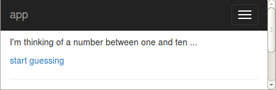
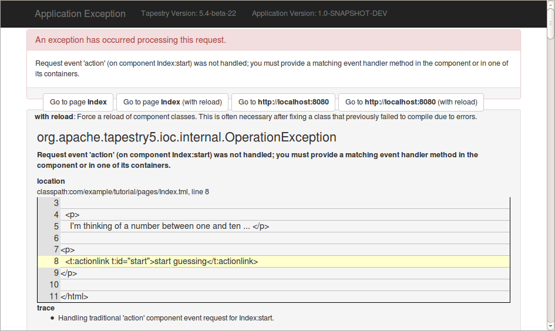
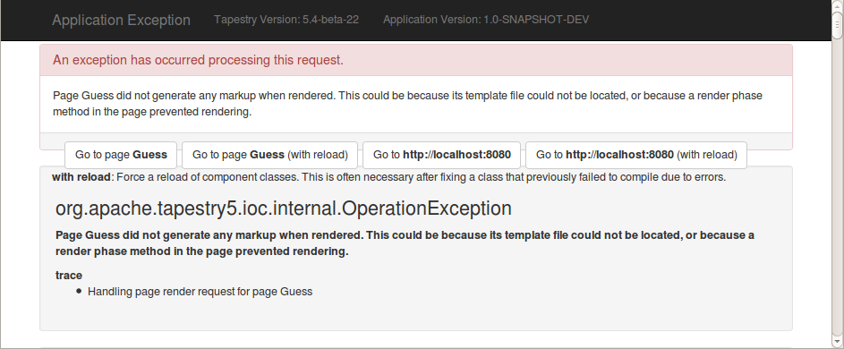
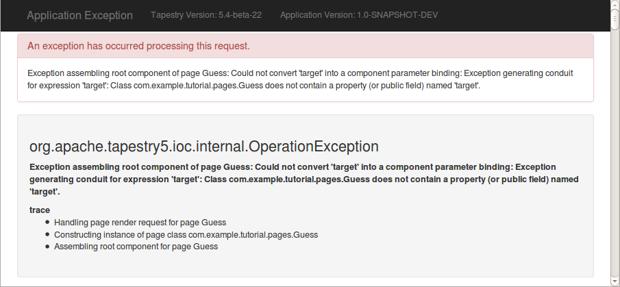
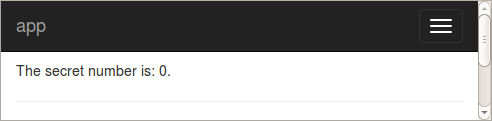
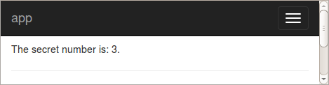
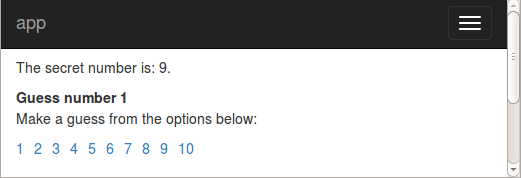
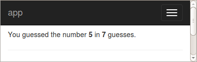

Implementing the Hi-Lo Guessing Game
Let’s start building a basic Hi-Lo Guessing game.
In the game, the computer selects a number between 1 and 10. You try and guess the number, clicking links. At the end, the computer tells you how many guesses you required to identify the target number. Even a simple example like this will demonstrate several important concepts in Tapestry:
-
Breaking an application into individual pages
-
Transferring information from one page to another
-
Responding to user interactions
-
Storing client information in the server-side session
We’ll build this little application in small pieces, using the kind of iterative development that Tapestry makes so easy.
Our page flow is very simple, consisting of three pages: Index (the starting page), Guess and GameOver. The Index page introduces the application and includes a link to start guessing. The Guess page presents the user with ten links, plus feedback such as "too low" or "too high". The GameOver page tells the user how many guesses they took before finding the target number.
Index Page
Let’s get to work on the Index page and template. Make Index.tml look like this:
<html t:type="layout" title="Hi/Lo Guess"
xmlns:t="http://tapestry.apache.org/schema/tapestry_5_3.xsd">
<p>
I'm thinking of a number between one and ten ...
</p>
<p>
<a href="#">start guessing</a>
</p>
</html>And edit the corresponding Java class, Index.java, removing its body (but you can leave the imports in place for now):
package com.example.tutorial1.pages;
public class Index
{
}Running the application gives us our start:

However, clicking the link doesn’t do anything yet, as its just a placeholder <a> tag, not an actual Tapestry component. Let’s think about what should happen when the user clicks that link:
-
A random target number between 1 and 10 should be selected.
-
The number of guesses taken should be reset to 0.
-
The user should be sent to the Guess page to make a guess.
Our first step is to find out when the user clicks that "start guessing" link. In a typical web application framework, we might start thinking about URLs and handlers and maybe some sort of XML configuration file. But this is Tapestry, so we’re going to work with components and methods on our classes.
First, the component.
We want to perform an action (selecting the number) before continuing on to the Guess page.
The ActionLink component is just what we need; it creates a link with a URL that will trigger an action event in our code … but that’s getting ahead of ourselves.
First up, convert the <a> tag to an ActionLink component:
<p>
<t:actionlink t:id="start">start guessing</t:actionlink>
</p>If you refresh the browser and hover your mouse over the "start guessing" link, you’ll see that its URL is now /tutorial1/index.start, which identifies the name of the page ("index") and the id of the component ("start").
If you click the link now, you’ll get an error:

Tapestry is telling us that we need to provide some kind of event handler for that event. What does that look like?
An event handler is a method of the Java class with a special name.
The name is onEventnameFromComponent-id … here we want a method named onActionFromStart().
How do we know that "action" is the right event name?
Because that’s what ActionLink does, that’s why its named ActionLink.
Once again, Tapestry gives us options; if you don’t like naming conventions, there’s an @OnEvent annotation you can place on the method instead, which restores the freedom to name the method as you like.
Details about this approach are in the Tapestry Users' Guide.
We’ll be sticking with the naming convention approach for the tutorial.
When handling a component event request (the kind of request triggered by the ActionLink component’s URL), Tapestry will find the component and trigger a component event on it. This is the callback our server-side code needs to figure out what the user is doing on the client side.
Let’s start with an empty event handler:
package com.example.tutorial1.pages;
public class Index
{
void onActionFromStart()
{
}
}In the browser, we can re-try the failed component event request by hitting the refresh button … or we can restart the application. In either case, we get the default behavior, which is simply to re-render the page.
Note that the event handler method does not have to be public; it can be protected, private, or package private (as in this example). By convention, such methods are package private, if for no other reason than it is the minimal amount of characters to type.
Hmm… right now you have to trust us that the method got invoked. That’s no good … what’s a quick way to tell for sure? One way would be have the method throw an exception, but that’s a bit ugly.
How about this: add the @Log annotation to the method:
import org.apache.tapestry5.annotations.Log;
...
@Log
void onActionFromStart()
{
}
...When you next click the link you should see the following in the Eclipse console:
[DEBUG] pages.Index [ENTER] onActionFromStart() [DEBUG] pages.Index [ EXIT] onActionFromStart [INFO] AppModule.TimingFilter Request time: 3 ms [INFO] AppModule.TimingFilter Request time: 5 ms
The @Log annotation directs Tapestry to log method entry and exit.
You’ll get to see any parameters passed into the method, and any return value from the method … as well as any exception thrown from within the method.
It’s a powerful debugging tool.
This is an example of Tapestry’s meta-programming power, something we’ll use quite a bit of in the tutorial.
Why do we see two requests for one click? Tapestry uses an approach based on the Post/Redirect/Get pattern. In fact, Tapestry generally performs a redirect after each component event. So the first request was to process the action, and the second request was to re-render the Index page. You can see this in the browser, because the URL is still "/tutorial1" (the URL for rendering the Index page). We’ll return to this in a bit.
We’re ready for the next step, which involves tying together the Index and Guess pages. Index will select a target number for the user to Guess, then "pass the baton" to the Guess page.
Guess Page
Let’s start by thinking about the Guess page. It needs a variable to store the target value in, and it needs a method that the Index page can invoke, to set up that target value.
package com.example.tutorial1.pages;
public class Guess
{
private int target;
void setup(int target)
{
this.target = target;
}
}Create that Guess.java file in the same folder as Index.java. Next, we can modify Index to invoke the setup() method of our new Guess page class:
package com.example.tutorial1.pages;
import java.util.Random;
import org.apache.tapestry5.annotations.InjectPage;
import org.apache.tapestry5.annotations.Log;
public class Index
{
private final Random random = new Random(System.nanoTime());
@InjectPage
private Guess guess;
@Log
Object onActionFromStart()
{
int target = random.nextInt(10) + 1;
guess.setup(target);
return guess;
}
}The new event handler method now chooses the target number, and tells the Guess page about it.
Because Tapestry is a managed environment, we don’t just create an instance of Guess … it is Tapestry’s responsibility to manage the life cycle of the Guess page.
Instead, we ask Tapestry for the Guess page, using the @InjectPage annotation.
| All fields in a Tapestry page or component class must be non-public. |
Once we have that Guess page instance, we can invoke methods on it normally.
Returning a page instance from an event handler method directs Tapestry to send a client-side redirect to the returned page, rather than sending a redirect for the active page. Thus once the user clicks the "start guessing" link, they’ll see the Guess page.
| When creating your own applications, make sure that the objects stored in final variables are thread safe. It seems counter-intuitive, but final variables are shared across many threads. Ordinary instance variables are not. Fortunately, the implementation of Random is, in fact, thread safe. |
So … let’s click the link and see what we get:

Ah! We didn’t create a Guess page template. Tapestry was really expecting us to create one, so we better do so.
<html t:type="layout" title="Guess The Number"
xmlns:t="http://tapestry.apache.org/schema/tapestry_5_3.xsd">
<p>
The secret number is: ${target}.
</p>
</html>Hit the browser’s back button, then click the "start guessing" link again. We’re getting closer:

If you scroll down, you’ll see the line of the Guess.tml template that has the error. We have a field named target, but it is private and there’s no corresponding property, so Tapestry was unable to access it.
We just need to write the missing JavaBeans accessor methods getTarget() (and setTarget() for good measure). Or we could let Tapestry write those methods instead:
@Property
private int target;The @Property annotation very simply directs Tapestry to write the getter and setter method for you.
You only need to do this if you are going to reference the field from the template.
We are getting very close but there’s one last big oddity to handle. Once you refresh the page you’ll see that target is 0!

What gives? We know it was set to at least 1 … where did the value go?
As noted above, Tapestry sends a redirect to the client after handling the event request. That means that the rendering of the page happens in an entirely new request. Meanwhile, at the end of each request, Tapestry wipes out the value in each instance variable. So that means that target was a non-zero number during the component event request … but by the time the new page render request comes up from the web browser to render the Guess page, the value of the target field has reverted back to its default, zero.
The solution here is to mark which fields have values that should persist from one request to the next (and next, and next …). That’s what the @Persist annotation is for:
@Property
@Persist
private int target;This doesn’t have anything to do with database persistence (that’s coming up in a later chapter).
It means that the value is stored in the HttpSession between requests.
Go back to the Index page and click the link again. Finally, we have a target number:

That’s enough for us to get started. Let’s build out the Guess page, and get ready to let the user make guesses. We’ll show the count of guesses, and increment that count when they make them. We’ll worry about high and low and actually selecting the correct value later.
When building Tapestry pages, you sometimes start with the Java code and build the template to match, and sometime start with the template and build the Java code to match. Both approaches are valid. Here, lets start with the markup in the template, then figure out what we need in the Java code to make it work.
<html t:type="layout" title="Guess The Number"
xmlns:t="http://tapestry.apache.org/schema/tapestry_5_3.xsd"
xmlns:p="tapestry:parameter">
<p>
The secret number is: ${target}.
</p>
<strong>Guess number ${guessCount}</strong>
<p>Make a guess from the options below:</p>
<ul class="list-inline">
<t:loop source="1..10" value="current">
<li>
<t:actionlink t:id="makeGuess" context="current">${current}
</t:actionlink>
</li>
</t:loop>
</ul>
</html>So it looks like we need a guessCount property that starts at 1.
We’re also seeing one new component, the Loop component.
A Loop component iterates over the values passed to it in its source parameter, and renders it body once for each value.
It updates the property bound to its value parameter before rendering its body.
That special property expression, 1..10, generates a series of numbers from 1 to 10, inclusive.
Usually, when you use the Loop component, you are iterating over a List or Collection of values, such as the results of a database query.
So, the Loop component is going to set the current property to 1, and render its body (the <li> tag, and the ActionLink component).
Then its going to set the current property to 2 and render its body again … all the way up to 10.
And notice what we’re doing with the ActionLink component; its no longer enough to know the user clicked on the ActionLink … we need to know which iteration the user clicked on.
The context parameter allows a value to be added to the ActionLink’s URL, and we can get it back in the event handler method.
The URL for the ActionLink will be /tutorial1/guess.makeguess/3. That’s the page name, "Guess", the component id, "makeGuess", and the context value, "3".
|
package com.example.tutorial1.pages;
import org.apache.tapestry5.annotations.Persist;
import org.apache.tapestry5.annotations.Property;
public class Guess
{
@Property
@Persist
private int target, guessCount;
@Property
private int current;
void setup(int target)
{
this.target = target;
guessCount = 1;
}
void onActionFromMakeGuess(int value)
{
guessCount++;
}
}The revised version of Guess includes two new properties: current and guessCount.
There’s also a handler for the action event from the makeGuess ActionLink component; currently it just increments the count.
Notice that the onActionFromMakeGuess() method now has a parameter: the context value that was encoded into the URL by the ActionLink.
When then user clicks the link, Tapestry will automatically extract the string from the URL, convert it to an int and pass that int value into the event handler method.
More boilerplate code you don’t have to write.
At this point, the page is partially operational:

Our next step is to actually check the value provided by the user against the target and provide feedback: either they guessed too high, or too low, or just right.
If they get it just right, we’ll switch to the GameOver page with a message such as "You guessed the number 5 in 2 guesses".
Let’s start with the Guess page; it now needs a new property to store the message to be displayed to the user, and needs a field for the injected GameOver page:
@Property
@Persist(PersistenceConstants.FLASH)
private String message;
@InjectPage
private GameOver gameOver;First off, we’re seeing a variation of the @Persist annotation, where a persistence strategy is provided by name.
FLASH is a built-in strategy that stores the value in the session, but only for one request … it’s designed specifically for these kind of feedback messages.
If you hit F5 in the browser, to refresh, the page will render but the message will disappear.
Next, we need some more logic in the onActionFromMakeGuess() event handler method:
Object onActionFromMakeGuess(int value)
{
if (value == target)
{
gameOver.setup(target, guessCount);
return gameOver;
}
guessCount++;
message = String.format("Your guess of %d is too %s.", value,
value < target ? "low" : "high");
return null;
}Again, very straight-forward. If the value is correct, then we configure the GameOver page and return it, causing a redirect to that page. Otherwise, we increment the number of guesses, and format the message to display to the user.
In the template, we just need to add some markup to display the message:
<strong>Guess number ${guessCount}</strong>
<t:if test="message">
<p>
<strong>${message}</strong>
</p>
</t:if>This snippet uses Tapestry’s If component.
The If component evaluates its test parameter and, if the value evaluates to true, renders its body.
The property bound to test doesn’t have to be a boolean; Tapestry treats null as false, it treats zero as false and non-zero as true, it treats an empty Collection as false … and for Strings (such as message) it treats a blank string (one that is null, or consists only of white space) as false, and a non-blank string is true.
GameOver Page
GameOver.java
package com.example.tutorial1.pages;
import org.apache.tapestry5.annotations.Persist;
import org.apache.tapestry5.annotations.Property;
public class GameOver
{
@Property
@Persist
private int target, guessCount;
void setup(int target, int guessCount)
{
this.target = target;
this.guessCount = guessCount;
}
}<html t:type="layout" title="Game Over"
xmlns:t="http://tapestry.apache.org/schema/tapestry_5_3.xsd"
xmlns:p="tapestry:parameter">
<p>
You guessed the number
<strong>${target}</strong>
in
<strong>${guessCount}</strong>
guesses.
</p>
</html>The result, when you guess correctly, should be this:

That wraps up the basics of Tapestry; we’ve demonstrated the basics of linking pages together and passing information from page to page in code as well as incorporating data inside URLs.
There’s still more room to refactor this toy application; for example, making it possible to start a new game from the GameOver page (and doing it in a way that doesn’t duplicate code). In addition, later we’ll see other ways of sharing information between pages that are less cumbersome than the setup-and-persist approach shown here.
Next up: let’s find out how Tapestry handles HTML forms and user input.